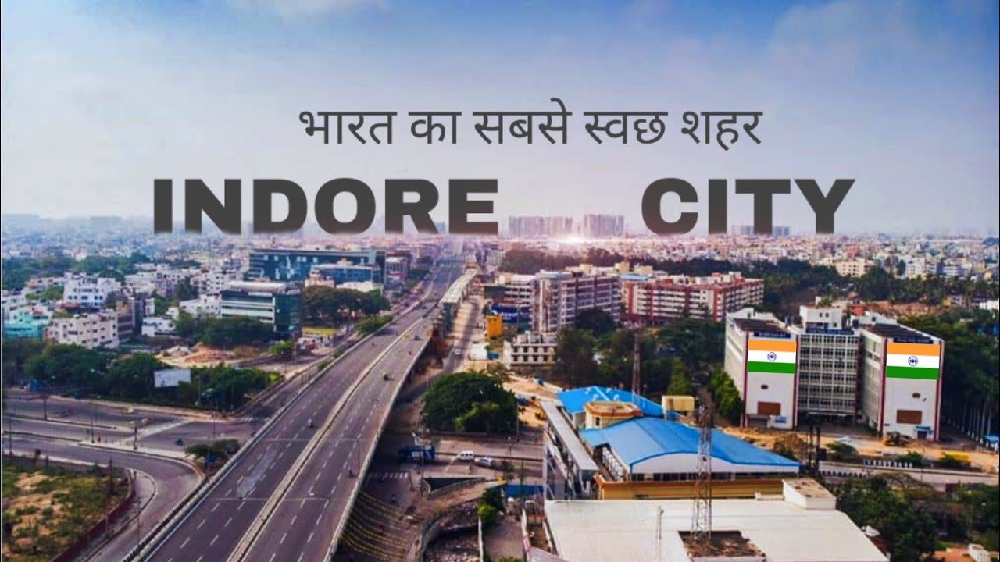

BHOPAL
Welcome to the city of lakes .i am going to introduce you about the city Bhopal

- 1956, Bhopal became the part C State or Madhya Pradesh.
- The Bhopal district was carved out on 02-10-1972,
- which continues to be one of the 45 districts of the State.
- Bhopal state was an independent state of 18th century India,
- a princely state of India from 1818 to 1947, and an Indian state from 1949 to 1956
here i illustrate the famous places of Bhopal in the video so enjoy.....
INDORE
Welcome to the cleanest city of India .i am going to introduce you about the city INDORE

- 40 feet high Idol at Bada Ganapati is the largest Ganesh Idol in the world.
- Indore is the only city in India to have an Indian Institute of Management and an Indian Institute of Technology
- Indore happens to be the only city in India to have the greatest jyotirlinga in the range of 100 km-Omkareshwar & Ujjain
- Indore’s Kanchi Mandir is all decked up with mirrors
- The city is the largest consumer of Poha
here i illustrate the famous places of Indore in the video so enjoy.....
REWA
Welcome to the Land of white tiger .i am going to introduce you about the city REWA
- Rewa is known as the “Land of White Tigers.
- The name “Rewa” comes from the word “Revati.Rewa gets its name from Revati, the wife of Lord Balarama, who is believed to have resided here.
- The Keoti Waterfalls offer a breathtaking sight.
- The Bansagar Dam is an engineering marvel.
- Rewa is the birthplace of renowned poet Rahim.
here i illustrate the famous places of Indore in the video so enjoy.....